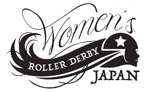
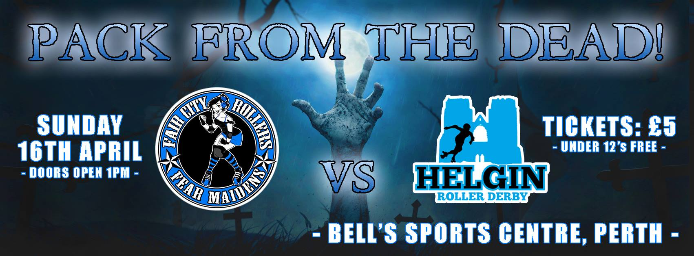

It's Late n' Lite with DRG
Dundee Roller Girls' popular Late n' Lite officials bootcamp is back for 2017. On the 3rd of April at Manhattan Works, Dundee, DRG officials are opening their doors at 7pm for a three hour bootcamp, all for a fiver!
 Obligatory after bootcamp photo!
Obligatory after bootcamp photo!
Last year saw three instalments of this officials orientated bootcamp, inviting NSO's, Referees and anyone that wanted to expand their rules knowledge to DRG's Manhattan Works venue in Dundee. Not only do they offer the chance to learn from some of the most experienced referees in Scotland but also to try out the tiled sports court that is so common across the US derby scene!
Their previous Late n' Lite's have covered a variety of topics to help veteran and new officials alike! The first, in 2016, covered “Oddly phrased Skater Queries” and “Official Reviews”; the second: “OPR like a Pro” and “Positive Self Talk!”; with the third covering “Defusing Difficult Situations” and “Level up your JR and OPR positioning”.
[gallery ids="16013,16012,16014" type="rectangular"]
Each mini-bootcamp consists of two 45 minute off-skate sessions, usually one broad subject is covered initially and then another role-specific focus is brought out. After which, on skates referees are given the chance to put these new skills to the test by refereeing the Dundee Roller Girls skaters in a final hour scrim!
To learn a bit more about the reasoning behind these bootcamps, and just have a wee catch up with some of Scotland's referees, we had a wee chat with Ruby RaGe (R) and Tiny Tearaway (T) (head officials for DRG 2017).
[gallery ids="16028,16027" type="circle" columns="2"]
Q: So to start us off, how did these bootcamps come around? Was it something that DRG officials were working on for a long time?
R: I guess we started having a chat amongst the group and Righteous Oxide came up with the idea!
T: I wasn’t actually part of the league when the bootcamps were first talked about. I think it was commented on that there wasn’t anything like this already in Scotland and it would be a good idea to look into it. A few months later the first bootcamp popped up!
Q: There's quite a lot of you DRG officials isn't there? Do you all take it in turns for leading a session or how is it all planned?
R: What tends to happen is that folks volunteer to take a session. When it comes to the ‘classroom’ stuff it’s not everyone’s bag to stand up in front of a room full of people. I think the great thing is we all bring something different to the table. This makes it really varied and interesting.
T: All of the officials at DRG have their own amazing skillsets. We have a wee chat about topics for a bootcamp and usually someone volunteers to take a session on a specific subject. I was really excited to do my session on jam reffing as I can get quite passionate about it and want all the refs to love it as much as I do
Q: What's planned for your fourth installment then?
R: Ahhh, I’m not part of the planning for this one, I'll let Tiny take this question..!
T: The fourth bootcamp is probably going to be the most exciting. So far we have focused mainly on skating officials but with so many people at DRG and across all of the Scottish leagues taking an interest in the non skating side of things, we decided to make the bootcamp for skating officials as well as anyone wanting to delve into the wonderful world of nso’ing. We are delighted that the very talented Peggy Kreugar from ARRG has agreed to take this session. After the theory side of things all of the officials get the chance to ref and NSO a scrim with the lovely skaters from DRG.
Q: How do you feel running bootcamps like these impacts the movement of Scottish Officials? Especially when specific focus is being put into our lovely NSOs?
R: I think what our league is offering is very special. It’s fair to say that NSO’s are sometimes overlooked and we very much feel they are part of the big picture. Nurturing on & off skates officials is integral to the sport.
T: It is a bit of a laugh between the Scottish officials that DRG have all the refs in Scotland. This isn’t quite true but we are very lucky to have 10 referees who ref at different levels throughout Scotland, the rest of the uk and the rest of the world. We are a league who have an open door policy when it comes to helping anyone who wants to learn how to ref or nso. We saw the bootcamps as a way to help newer officials and newer leagues with fewer refs.
Q: Are there any major barriers you feel for Scottish Officials breaking through into officiating outside of bonnie Scotland or even into international derby?
R: I think you have to get yourself known & put yourself out there. It will get harder as the pool of Officials increases but it’s good to have contacts!
T:The Scottish officials are a very close community. We are always happy to help each other out and because of this I think we have built a reputation of being knowledgeable, fair and reliable. I think for a lot of newer officials it is quite daunting to start applying to events and games over the border and abroad. The advice I was given was apply to everything, get your name out there and get known. If you get rejected, although it sucks at the time there will always be more opportunities. Work hard, ask for help and be the best you can be.
Q: To finish off, do you guys wanna give us some hints to the next few bootcamps? What are your main goals for these?
R: Well there will be lots of OPR training from our wonderful Shuggs Bunny and of course some great insight into Jam ref’ing like a true super star from Tiny. I’ve done some of the more mental rather than physical aspects of Derby in the past (positive self-talk) and would love to do something similar again this year. We just love the fact that lots of Officials are prepared to travel some distance to attend these Boot Camps. I think we must be doing something right!
T: Yeah, just what Rubes has said, having the next few bootcamps continuing along the same path. Looking at focused and specific learning, but at the same time making sure there is a bit of something to keep everyone interested. It is great to see that other leagues such as Glasgow Roller Derby are offering more officiating events, aimed more at nso’s but also welcome refs. I think if leagues continue with these bootcamps and training sessions the future of Scottish officiating can only become stronger.
So if you want to polish up your NSO skills, OPR like a PRO and have some scrim time practice then DRG's Late n' Lite Bootcamp is for you!
Doors open at 7pm at Manhattan Works, Dundee. Check out the facebook event page for more details!
EuroClash Interviews: Team Scotland Roller Derby
With less than two weeks to go before EuroClash - Newcastle Roller Girls' first International Tournament - we're also now just two interviews away from covering all of the attendees.
This interview is a particularly special one for us, though, as we're covering the second National Team attending EuroClash - Team Scotland Roller Derby.
The current Team Scotland has only played publicly in two events: The Road to TBC in Cardiff last year (placing 6th); and against Team Belgium in February. Neither of those events featured the final roster of skaters, however: EuroClash will be the first public appearance of the Final 20 in competition. At EuroClash, Team Scotland will be competing against Team Ireland, who they lost to (in a very tough game for both teams) in Cardiff. This time around, with more training, and the final 20 selection, TS will be hoping to change the result. The Team Ireland/ Team Scotland bout at EuroClash is a National Teams Event leading up to the Roller Derby World Cup 2018 in Trafford, Greater Manchester, hosted by Rainy City Roller Derby.

In order to properly represent Team Scotland, we talked to Crazylegs - the sole three-times member of the Team Scotland roster, and Malin Landsborough - one of the skaters new to the team this time around - about all things Team Scotland and EuroClash.
Team Scotland has been at both previous World Cups - placing 11th the first time, and around the same place the second (slightly underranked each time). The Scottish spirit has always been strong - but how has the experience of the National Team changed (if it has) between versions?
Crazylegs: It’s definitely changed a lot from World Cup to World Cup; I'd like to say the uniforms have been getting better, but we went from the unfortunate dresses of 2011, to the giant name misprints in 2014, and our training shirts for 2017 have been causing all sorts of jammer body part entrapment issues with the loose arm holes. Let's hope for a successful 2018 squad uniform - we are wide open for sponsorship if anyone is up for a challenge!
I guess for Toronto in 2011, everything was an unknown - I kept a proper daily diary during my 2011 World Cup journey and I read it back the other day; mind blowing. We knew absolutely nothing! It was the first time any of us had been part of such a big tournament structure and outside of Europe. For a lot of skaters it was their first time skating outside of Scotland. We were excited by every single thing - every shout out, every freebie, the school buses, every time someone asked us to sign a programme. Our wee Scotch corner of supporters made us cry, it was so cool to see people travel to far to come and cheer. I remember being totally shocked that they came! It happened again in Dallas, with our amazing support from home, and by 2014 we knew much more about setting expectations with skaters and planning and organising beforehand so it was a bit of a calmer experience, but still, playing National teams is always going to be a bit of an unknown because we don’t tend to see them regularly play outside of WC tournaments, and, coupled with shorter qualifier games, and a last minute changing schedule, it’s definitely a different kind of challenge.
This time, I think we’re focusing more on heads-down regular team training just now, we started sooner and that will hopefully give us more time to build on skills and tactics as a team and will translate into a more consistent level of play for Manchester. The team is looking really strong with a load of potential and I’m all fired up for my third World Cup!
This iteration of Team Scotland's first public outing was at The Road to TBC, long before the selection happened. Despite the early point in TS' training, the team placed pretty well, although the close bout against Spain was unlucky for your resulting placement. What were the high points for you at the tournament, and what did you learn from it?
C: It was great! I think the best thing that any team can do to forge fast bonds and get to know each other really well is to travel together and play in a tournament, so for that reason it was a huge success for our training squad, we have a team of characters and they are all lovely. We got to know each other better, learned how we each react to nerves, pressure and being away from our usual team environments.
It was challenging because as a training squad of 30, the management selected teams by picking from a hat, and we also had skaters playing in multiple positions to test out strengths, so we really had to approach it as a training opportunity, which can be difficult in a public tournament, but I think we managed beautifully and the whole team vibe in the games was really positive and focused.
A few of the team got to learn just how bad I am at navigating Google Maps, yet how amazing I am at summoning random taxis to resolve emergency lost-in-Wales situations.
Malin: Road to TBC was a great opportunity for the team to skate together early on in the TS training, and because of this (still being the top 30) we couldn’t all skate in it. But as one of those whose name unfortunately didn’t come up for it, I still truly enjoyed watching it from the side line.
I feel the high point of this tournament was really that it brought us together as a team! It allowed us the chance to really get to know each other in a competitive setting early on in our training. Plus the performance that Scotland put out was fantastic to see – too many close games for my wee heart to take. It did also help us identify our training focuses in moving forward.
One striking thing about this Team Scotland selection is the continuing increase in the proportion of Dundee (and Granite City) skaters in the 20. The 2011 TS was almost entirely Auld Reekie and Glasgow, and now all 4 teams are much more equally represented. How does it feel [Malin] to be part of this trend, and what do you [both] think it says about the development of roller derby in Scotland? C: I think this is a really important question. It's great to see a broader spread of skaters representing from across the teams in Scotland, it's kind of shaping up to look how it should and I think this is reflected in a few other countries this time around. Having wider representation means a more extensive set of experiences to draw from on the team. I'd love to see that trend continue and see competition in Scotland being pushed year on year across all competitive teams, so that we collectively drive the level of play much higher for the athletes here who aspire to that, and want to find the hardest challenges without always having to travel so far.
I want to help us build a Team Scotland that the strongest eligible players in our sport are all really keen to be part of, and we can enable that with smart planning; aligning training and game commitments, creating clear training and rest cycles and by working to understand the sanctioned play demands on the skaters teams taking part in WFTDA Play Offs or British Champs - all of which happens in tandem with the National team training. Having that understanding of the priorities of the leagues and teams representing on Team Scotland can ensure that we get the best out of our athletes. This will ensure the continued growth of our sport in National and local play and this is really important as we move forward.
M: It’s a fantastic feeling to be part of such an increase of Northern skaters making the TS cut: we at Dundee have been putting so much into our training the past couple of years, so to make it to this point just cements to us that it is all worth it. For so many of us to make the training squad was such an incredible achievement, especially looking back to the last selection where we at Dundee only had wee Milky representing us, words couldn’t even describe the feeling finding out such a high percent of us made the top 20! This feeling is only heightened by the response we received when the selection was made public, the support we feel behind us is incredible.
It is incredible to see the development in Scottish Roller Derby over the past few years! The support we have received from the larger Scottish leagues has been inspiring and has allowed us to level up (and gain WFTDA apprenticeship). Passing on knowledge and camaraderie throughout Scottish derby has brought all levels of leagues together; it’s exciting to see how all the Scottish teams are moving forward.
This interview is partly to promote the EuroClash Tournament in Newcastle. Speaking of that, Team Scotland will be attending to compete with Ireland again, who you last encountered at Road to TBC. How are you preparing for the rematch, and what do you hope to achieve this time?
C: Team Ireland is such a good, solid team to play, we never seem to get pitched against them in WC tournaments, so it’s great to play them outside of that. There was a lot of positive feedback from within our team about that game – we felt like we had some really strong moments. It was one of those ‘if only we’d had 20 more minutes’ games! It will be really interesting to play again so soon and I hope we can better our score differential.
I feel like Team Scotland is hitting the ground running having just been given news of the final squad, so there really hasn’t been much time to prepare for this one - but we have been training every month for the last few months and we have a lot of trust in each other. A lot of the Team Scotland skaters are playing in 2 or 3 of our own league games in the tournament, so we’ll be nice and warmed up for the Ireland game.
M: Yes, when we played at Road to TBC it was a close, hard fought game on both sides. As a league we’re continuing with our training focuses and gelling as a team on track, so we can go into this rematch as a united front. This is another step on our road to Greater Manchester, so if we can use this opportunity to put everything we’ve been training into practice, it’ll be a success to us!
I love a rematch and can’t wait to meet the Team Ireland squad on track.
And when you're not on skates, what teams or games are you most looking forward to catching? C: I'm really looking forward to seeing Paris play and also Tiger Bay - I've not seen either of those teams play for a wee while, and both are usually really good to watch. Auld Reekie are playing Paris in April, so it's always good to get a wee spy on them beforehand. I'll be playing with Auld Reekie against MMR, Berlin and the new Leeds team at EuroClash, and I think each of those games will offer a really good and potentially very different kind of challenge.
M: It’ll be great to see all the talent on show throughout the weekend, but I have to say I’m most excited to be there to support our pals at ARRG through their games!!
What's next for Team Scotland on the road to Greater Manchester?
C: There will be lots of scrimmage and game opportunities set up before the WC I'm sure - we've just upped our training to twice monthly, and our management are looking about for opportunities to help us train against the toughest teams. After Euro Clash we'll probably know more about team positions and move into a more focused training cycle. I'd love to play some more of the European teams in preparation, because we can get to them fairly easily. We'll also most definitely be working on our uniform game.
M: I think for Team Scotland moving forward will be for us to settle into our positions within the team and understand how we all work together, just like any newly formed team. It’s great to see how we’ve improved from the first selection to the final 20 and so I’m excited to see this carry on.
Also anticipating a busy period of fundraising leading up to Greater Manchester.
And, given the performance of Scotland in the last two World Cups - and the likely even greater scope of the 2018 Roller Derby World Cup in Greater Manchester - how are you hoping that Scotland will do third time around? C: Well obviously, we want to win it. Falling somewhere above USA, Australia and Team England would be fab :-)
M: If we can improve on our position from the previous World Cups that would be fantastic, but this is a huge opportunity to bring back experience and knowledge from higher level roller derby, which can only benefit Scottish Roller Derby as a whole. EXCITED!!!
EuroClash will be held from the 25th to the 26th March at the Walker Activity Dome, Newcastle. Ticket available here:https://www.euro-clash.com/tickets , and on the door.
Non-US/Canadian Derby Roundup: 18/19th March Edition
As is traditional, we’re bringing you another roundup of the upcoming Roller Derby this weekend from across the world. As always, we’re using Flat Track Stats for much of this information – for regions with less good coverage, we also do a bit of intensive searching.
Predictions of bouts are from FTS, if possible, and from our own SRD Rank where FTS cannot make predictions (for example: Latin America, or non-MRDA men’s bouts). Our new SRD Rank is out – the first for this year, and now includes Junior leagues where possible, and a lot more Latin American leagues.
If we’ve missed you from our roundup, please let us know!
Scotland
As far as we know, there's no derby in Scotland this weekend.
UK
As will be the case for the next few months, much of the bouts in the UK are part of British Champs:
- In Bristol, the Men's Tier-2 continues with hosts Bristol Vice Quads taking on Barrow Infernos, and hosting Wirral Men's against Mild Discomfort. [FTS Tournament][EVENT]
- In Devon, the Tier-3 South continues, as hosts North Devon play Riot City Ravens (Newport), and host Cornwall versus Bath [FTS Tournament][EVENT]
Outside of Champs:
- In Leicester, Roller Derby Leicester B are hosting Barnsley [FTS][Closed] (FTS favours the home team)
- And nearby, in Leicestershire still, the Dolly Rockits are hosting a double header, playing Hulls Angels [FTS] and hosting a Men's mixed rookie bout [EVENT] (FTS favours Hull)
- Finally, following up on their bout last weekend, Manchester's Rainy City are hosting a bout for their C team against Borderland Brawlers (of Stamford and Peterborough) [FTS][EVENT] (FTS calls this close, but for the home team)
- LATE ADDITION: SciFight III, the 8-way Coed tournament happens at Shrewsbury on Saturday, along with a bootcamp featuring iLLBilly, Swede Hurt and Re-AnimateHer [EVENTEVENT]
Europe
In Europe, there’s a surprising lack of National Tournaments this coming weekend, but plenty of derby regardless:
- On Saturday, Lyon Roller Derby Association (LARD) are hosting a double header, with LARD A against Dijon's Velvet Owls [FTS] and LARD B facing Marseille B [FTS][EVENT] (FTS favours the visitors)
- there's a lot of Sunday bouts in France, starting with a triple header in Rennes, as Roller Derby Rennes play Lutece A [FTS], Rennes B take on Lutece B [FTS], and Men's Roller Derby Rennes play Panam B [FTS]. [EVENT] ( SRDRank favours the home team for the Men's (FTS can't predict that). For the women, FTS favours the visitors in the A game, and calls the B game as very close.)
- In La Roche sur Yon, Les Passeuses Dames are hosting a double header, playing Tours[FTS] led by a mixed black v white bout.[EVENT] (FTS favours the visitors)
- In Castres, there's another double header as hosts Castres take on Montpellier's DCCLM B [FTS] and Perpignan's Coccyx Lewis play Tarbes' Full Metal Punkettes [FTS] [EVENT] (FTS favours Tarbes, and won't predict the other bout. SRDRank predicts the visitors to win there.)
- and finally for France, in Nîmes, yet another double header sees Nimes A play Barcelona B [FTS], followed by Montpellier's Men's team, the Kamiquads, facing Barcelona Men's, the Rocknrollaz [FTS] [EVENT] (FTS favours the vistors for women, and can't predict the other. SRDRank predicts the men's bout to be v close, in favour of the hosts.)
- Back to Saturday for the rest of Europe, and starting from the south: In Madrid, Roller Derby Madrid are hosting a triple round-robin against Oslo and Tenerife [FTS 1,2,3][EVENT] (FTS expects a close vying of Madrid and Oslo for the top spot.)
- In Torino, the Bloody Wheels are hosting Palermo's Poison Kittens [FTS][EVENT] (FTS calls this for the hosts)
- In Zürich, Zürich City Rollergirlz are hosting Strasbourg's Hell's Ass Derby Girls [FTS][EVENT] (FTS calls this for the hosts)
- At The Hague, Netherlands, the Parliament of Pain host a double header, with their A team playing Namur B [FTS], and B team taking on Pink Peril of Heerlen [FTS] [EVENT] (FTS favours the hosts A, but calls the B bout as v close and for the visitors)
- In Frankfurt, Bembel Town Rollergirls are hosting a double header, with Bembel Town taking on Roller Girls of the Apocalypse (Kaiserslautern)[FTS], and Sisters of Mayhem facing a mixed team. [EVENT] (FTS calls for the visitors)
- In Kassel, Germany; Kassel Roller Derby are hosting Regensburg's Rolling Rat Pack[FTS][EVENT] (FTS feels the hosts have the advantage here)
- Up in Norway, Nidaros have a double header, with Nidaros B playing Cologne [FTS], and Nidaros A facing... Cologne! [FTS] (the latter bout is more of a friendly) [EVENT] (FTS feels the B bout is close, but in Cologne's favour)
- and Kallio, Finland in a closed bout, Kallo Rolling Rainbow are playing Helsinki A [FTS] (FTS calls this for Helsinki)
- LATE ADDITION: Team Netherlands (Men's) are holding an open Scrimmage against The World on Saturday. [EVENT](seems to have been CANCELLED?)
- LATE ADDITON: (we were sure we'd included this) Pibrac's Harpies Braqueuses are hosting a triple header in Pibrac, with Lyon's Grrriottes Girrrls against Toulouse' Blocka Nostra in a "scrimmage"; Men's derby with Lyon's Mon cherrry playing Toulouse' Barrons Cathares; and then Grrriottes Girrrls against hosts Harpies Braqueuses [EVENT]
Pacific
As far as we know there's no Pacific derby this weekend.
Latin America
In Central and South America, there's two big events we're aware of (please let us know if we're missing anything else):
- In Mexico City, the No Borders MCRD Tournament sees Mexico City Roller Derby host Texas Rollergirls' Hotrod Honeys, Cuidad Juárez's All Stars and Guadalajara's Minervas Roller Derby in a two-day event. Day 1 sees the Hotrod Honeys play each of the other three teams, whilst Day 2 is a round-robin between the Mexican teams. [FTS Tournament][EVENT] (As the Hotrod Honeys are a Home Team, we can't rate them re the others. SRDRank does predict a close win for the hosts overall, though, with Juárez in second.)
- And in Buenos Aires, Argentina, Sunday sees 2x4 Roller Derby host their last event before the Violentango 5 (about which more later in the week). This triple header sees 2x4 C against Pergamino's Motherfuckers [FTS], 2x4 B against Temperley's Dirty Fucking Dolls [FTS], and 2x4 A play Sailor City Rollers [FTS]. [EVENT] (We can't call the C bout, but SRDRank expects the hosts to win the B bout, and a very close bout for the A teams, with a slight edge to the hosts)
Other Events
Our semi-regular “other events” section highlights things further in the future you might want to keep an eye on.
Coming up in April, there's a lot of exciting tournaments. This week we'd like to mention Fantastic 8, an 8-way tournament featuring WFTDA member teams from across the continent - from Croydon and Sheffield to Vienna and Munich, by way of Rotterdam and Metz (the hosts), Dresden and Utrect.
- Fantastic 8 - Metz, France - April 15 https://www.facebook.com/events/1198179813643364/
also in April, the Louisey Rider Cup (mark 2) is scheduled for the week after, as Nottingham Roller Derby bring back the event due to popular demand. There's strong Scottish involvement already just in the referee and NSO crews, and tickets are still open for spectators.
- Louisey Rider Cup - Nottingham, UK - April 22 https://www.facebook.com/events/1808163936092199/
EuroClash Interviews: Auld Reekie Roller Girls
In a bonus for this week, we're returning to EuroClash for one more interview before the weekend.
Today, we're talking to Auld Reekie Roller Girls. The second oldest league in Scotland, ARRG have been active on the European stage almost as long as they've been competing - and their trip to the USA last year was their third. Whilst they qualified for WFTDA Division 2 Playoffs in 2016, the team declined the invitation for a host of good reasons - unfortunately, given the changes in competitive divisions in 2017, it will be harder work to make it a second year running. Last year, Auld Reekie's All-Stars competed against Dublin and Newcastle out of the other EuroClash attendees - with a win against the former, and mixed results (a win and a loss) against the latter. Team Scotland Roller Derby, who will also be competing at EuroClash, have 6 Auld Reekie skaters on their roster of 20, so they will also be represented in the bout between Ireland and Scotland.
Auld Reekie's Sharlotte Patterson (also a Team Scotland Rostered skater) talked to us about the team's past and future.
The ARRG All-Stars had a pretty good 2016 - starting off with a couple of wins against two other EuroClash attendees, Dublin and Newcastle.What was the high point of the year for you? Oh my goodness where to start? It was a fantastic year for us. We really played well together as a team. It’s hard to pick just one point in the year, there were so many good times for ARRG and myself. I think that I am just proud to a part of this wonderful team and play with very talented people. Everyone works hard at fostering togetherness and making us all feel like part of a team.
You then went across the Atlantic to compete in the Big O 2016, a return to the tournament from 2014. Despite facing even tougher opponents than the last time, we think you held up pretty well and reached the playoffs selection point with a high enough ranking to be invited to D2, which you declined. Overall, how was the transatlantic experience - does it ever get "normal" to travel across to the USA? And do you think you'll be keeping up the tradition, now that more WFTDA things are being scheduled on this side of the Atlantic? The Big O was an incredible experience and it was my first time visiting the USA. It was a really good environment and the organisers of the tournament were super welcoming. It was a great chance for the team to bond being together for a long period of time away from home. I’m not sure you could ever say that it be ‘normal’ to travel such a huge distance to play roller derby - an amazing experience, yes! One that I will always remember as my first far flung trip away and my first tournament. The team were really strong and we came out with some very good results which helped us move up the rankings.
It’s hard to say anything further on tradition about going over but it is really exciting that there are more WFTDA things being scheduled this side of the Atlantic; this will mean more opportunities for European teams as cost is always something that will impact teams on going far away for games. I can’t wait to see how this progresses and watch/play in all the high level derby that is out there.
Coming up this weekend, though, you're still giving yourselves the tough challenges, playing current-hot-stuff league in the UK, Rainy City Roller Derby! How did that come about, and how are you feeling about challenging the WFTDA #26 team? This was a game arranged last year, and we have travelled down to scrimmage Rainy on a few occasions over the last year. They are a lovely team to play against and it has provided us with some valuable extra training. This weekend is going to be an incredibly challenging game but one we can absolutely rise to the challenge of. We have been training hard and have had extra team training sessions this year, not just for this game but for our upcoming season. I know that the All Stars will go down and will always give their absolute best.
At EuroClash, Auld Reekie will be playing Middlesbrough Milk Rollers, Bear City Roller Derby and Leeds Roller Derby. How are you feeling about the three bouts, and are there any specific plans you're making for them? Really excited. The last time we played against Middlesbrough Milk was back in 2015 for British Champs and it all came down to the last jam. I still replay that in my head at times because I was the jammer for Auld Reekie during the last jam and it was nerve-racking. Bear City and Auld Reekie have played each other a few times in the past and remained fairly close in the rankings. This will be our first time playing the new merged Leeds team. All three games are going to bring their own challenges, but we have been training as hard as we always do and really nailing our tactics.
When you're not on skates, are there any teams, or matchups, which you're particularly looking forward to seeing? There’s so many amazing teams taking part in Euro Clash that it’s too hard to pick. I’m really excited to watch all the other teams because each game is going to be as exciting as the next! It’s so good to see such high level teams have the chance to play in a European tournament and hopefully this is the start of many many more to come.
EuroClash also features a rematch between Team Ireland and Team Scotland. Last time, Ireland had had a single training session, and Scotland had a selection from the training team - this time you both have more experience of playing together, and Scotland has selected its final 20. (Congratulations on being a member!) How did it feel to be selected for the team - and how are you feeling about the rematch with Ireland?
Thank you, I am so proud to have been selected as one of the final 20 to play for my country. It’s an honour and I can’t wait to get stuck in. To be able to go to the World Cup to play and watch some of the best skaters in the world is going to be an unforgettable experience. I’m excited about the rematch with Ireland, it’s going be a challenging game as well as a great training opportunity for Team Scotland; we now have our final 20 selected and will be settled into our specific roles.
After EuroClash, what's next for ARRG's All-Stars?
The All Stars have a trip coming up to play Kallio and Paris at the end of April, and we will also be playing Newcastle again on 27 May. Our league has been pretty busy since the start of the year and our C team the ASTROs have a game against Bairn City on the 25 March and our B team the Reserves will be taking part in their first British Champs game on 22 April. It’s a really exciting time to part of ARRG and we have many more games coming up for all three of our teams over the coming months.
EuroClash is held between the 25th and 26th March, by Newcastle Roller Girls at the Walker Activity Dome. Tickets available at the EuroClash website: https://www.euro-clash.com/tickets on the door.
The Tomodachi Cup: Team Women's Roller Derby Japan [トモダチダービートーナメント:チームWRDJ]
As the Tomodachi Derby Tournament approaches, we're interviewing another team - the last team in the non-Sanctioned tier of the tournament. This article will be in both Japanese and English.

Team Women's Roller Derby Japan [Team WRDJ] is a mixed subscription team, which was open to anyone applying to join. It was organised by Women's Roller Derby Japan, the body which organises the Japanese Women's National Team. チームウィメンズローラーダービージャパン[チームWRDJは]への参加を適用する誰にでも開かれていた混成チーム、です。 これは、日本女子代表チームを組織しているウィメンズローラーダービージャパンが主催したものです。
Its roster consists of: 名簿には次のものが含まれます：
From (Tokyo Roller Girls Home Team): Neon Roller Monsters (Yokohama) [横浜のローラーダービーチーム から] ・Thunder BELL #950 ・Where's The Fire #75 ・Inga Knee'her #235 ・Rice Rocket #278 ・Savage Dragon #5360 ・Lisa Slamtimes #413 From Tokyo Three Rollers (Tokyo) [東京のローラーダービー・チーム Tokyo3Rollersから] ・Red Eye #88 From Kokeshi Roller Dolls (Okinawa) [沖縄のコケシローラードルスから] ・Loveless #0 ・Lil N. Gin #9 ・Lemmy Killmisstress #1975 ・PurpleHaze #21 ・Atomic Jenny #88 From Devil Dog Derby Dames (Okinawa) [沖縄のデヴィゥドグダービダメスから] ・Madam Vice #7 ・Christine Westbrook ・Mermaid Mayhem #20 From Echo City Knockouts (Hawaii) [ハワイのエコシチノクアウツから] ・Bandit Angel #18
Team Captain Thunder BELL was good enough to answer questions for us. チームキャプテンThunder BELLが私たちの質問に答えてくれた。
How did the idea for Team WRDJ occur? (チームWRDJのアイデアはどうやって起こったのですか？)
The Tomodachi Tournament originally had only a method to participate with full teams, and we felt this was a little sad. We looked for a good way to allow the opportunity for domestic skaters who can't join as their team, or players from foreign countries who are visiting without their team, to participate. We hit on the idea of making Team WRDJ. We hope that this team will help enjoyment of the tournament. 当初トモダチトーナメントにはチーム単位で参加する方法しかなく、それはとても限定的だと少し残念に思いました。トーナメントに参加しないチームの国内選手や海外から来日する選手達など、もっと沢山の人達に日本でダービーをプレイできる機会を作りたくて、Team WRDJを作るアイディアを思いつきました。このチームがより多くの人が友達トーナメントを楽しむ為に役に立つ事を願ってます。 The Women's Roller Derby Japan Team contains a lot of skaters from Neon Roller Monsters - Tokyo Roller Girls' "Japanese" team. With the experience you have playing the Sushi Rollers already, do you think this will be an advantage in the tournament? (Team WRDJには、東京ローラーガールズの「日本人」チームであるネオンローラーモンスターのスケーターがたくさん含まれています。すでに寿司ローラーを経験している経験があれば、これがトーナメントで有利になると思いますか？)
Team WRDJ is a mixed team, so I think it is stronger than Neon Roller Monsters. If there is something to be advantageous, if we use Japanese language during the game, they can't understand our strategy...But Sushi Rollers is smart and very strong team, so it might not matter! Team WRDJはミックスチームなので、ネオンローラーモンスターズよりも強いと思います。有利になる事があるとしたら、私達が日本語を使用すれば作戦が彼らにバレない事です。しかしスシローラーズはとても強いチームなので、そんな事は関係ないかもしれません…笑 With skaters from Honshu, Okinawa and Hawai'i, how have Team WRDJ been practising together before the Tomodachi Tournament? (本州、沖縄、ハワイの選手と一緒に、チームWRDJはTomodachiトーナメントの前にどのように練習していましたか？)
We can not practice together as Team WRDJ. We will think about our strategy. チームWRDJとして皆んなで一緒に練習する事出来ません。これから作戦を考えます。 Outside of your own division, there's a lot of other Roller Derby to watch at the tournament: which teams, or games, are you most looking forward to seeing? (自身の部門外には、トーナメントで観戦できる多くのローラーダービーがあります。どのチームや試合が最も楽しみですか？)
Personally, I'm looking forward to the Pan-Asian match. I'm very interested in how Asian players will play derby. WRDJ would like Roller Derby to spread further across Asia in the future. Pan-Asianの試合が最も楽しみです。 アジアの選手達がどんなプレイをするのかとても興味があります。これからもっとアジア全域にローラーダービーが広がっていってほしいです。
After the Tournament, will Team WRDJ continue in other events? (トーナメント終了後、WRDJチームは他のイベントを続行しますか？)
It is undecided right now, but we would like to do it again if we have good opportunities. 今のところ未定ですが、良い機会があればまたやりたいです。
Women's Roller Derby Japan also has a mandate to manage the National Japanese team. Looking towards 2018's Roller Derby World Cup, how is this going, what are your plans? (ウィメンズローラーダービージャパンには、日本人のチームを統括する権限もあります。 2018年のローラーダービーワールドカップを目指していかがですか、予定はどんな感じですか？)
We started new Team Japan for World Cup 2018. Twenty-five skaters from all over the world have applied for this time. Last time, our major goal was [just] participation in the World Cup, but this time, our new major goal is getting victories at the World Cup! Team practice has started in Japan. We need figure out how we work together with overseas skaters, but we are sure that new Team Japan will be stronger than last time. Please expect the Team Japan 2018!! 私達は2018年の為のチームジャパンを結成しました。今回は世界中から25人の選手達が応募をしてきました。前回はワールドカップに出場する事が私達の大きな目標でしたが、今回は勝つ事を大きな目標において、チーム作りをすると決めています。日本国内ではチーム練習が始まりました。パワーアップしたチームジャパンを是非期待していて下さい。
The Tomodachi Derby Tournament will be held between the 24th and 26th of March, in Okinawa Comprehensive Sports Park, Okinawa.トモダチダービートーナメントは３月２４日から３月２６日まで沖縄県総合運動公園 体育館で開催されます。
2017: the year of (more) Scottish Derby?
As we previously flagged, while the number of Scottish Leagues had been growing recently, the conversion of those leagues into bouting leagues had been a little slower... until 2017.
Most prominently, Perth's Fair City Rollers (who are effectively a new league after their hiatus led to a large changeover of members) and Scotland's second-northernmost league, Helgin Roller Derby, will be joining forces to take their first bout together.

On April 16th, in Perth's Bells' Sport Centre (famous for its domed roof and exceptionally shiny floor surface), the event, going by the name "Pack from the Dead", will kick off as doors open at 1pm for a 1.30pm start.
Speaking to us, Fair City said:
We’re excited to announce FCR’s comeback bout will take place in Perth on Sunday 16th April. After having a break of almost 5 years from competing, we’re back! We’ve created a brand new team of dedicated players, who’ve worked their butts off to get bout ready. FCR will be playing against Elgin’s team ‘Helgin’ at Bells Sports Centre and we want to welcome them to Perth for what will be a fantastic game. We’ve trained hard and played friendly matches against some fantastic teams, all with the aim of getting us bout ready…and now we want to shout out ‘bring it on’! 'Pack From The Dead' was the perfect name; FCR have been resurrected. Everyone is welcome, under 12s are free, please get your tickets now. Looking forward to seeing you all there.
Helgin Roller Derby are equally excited, with their Mane-iac telling us: "I'm very proud of how far Helgin has come as a club over the last two and a half years. We've come a long way from our very first days as a group of 4 girls attempting to skate in a small hall, to having a team of mins-passed skaters and preparing to play in our first game. Just thinking about playing in this game gives me butterflies, it's such an achievement for the club, and an exciting and momentous day for all the skaters. I can't wait to put on my Helgin uniform, skate on track as a team and show everyone what Helgin's made of!"
Fellow skater Bruteyvicious agrees, "It's a pretty momentous occasion. It was just a fantasy for us a year ago, but we moved steadily and grew together until we reached this point. We've played in many scrims between us but actually playing as a team together is really going to feel special! This is why I joined Derby, to play alongside my team in a sport I love. We will give 100% and will continue to do so and strive to keep playing and improving. I'm confident we can hold our own in our first bout. I can only imagine the adrenaline I'll feel on the day, I really can't wait."
But it's not just Helgin and Fair City who are planning to hold their first bouts this year. Inverness City Roller Derby are also planning to bout before 2017 is out, with a date scheduled for 19th August. Whilst we know ICRD will be hosting the bout, almost everything else (including their opponent) is not public at this time - as soon as there is an official announcement to be made, we will be highlighting it.
At the other end of the country, Doonhame Roller Derby, of Dumfries, are also planning their first public bout, although even less details are available than for ICRD. We hope to bring you details in the second half of the year!
Non-US/Canadian Derby Roundup: 11th/12th March Edition
As is traditional, we're bringing you another roundup of the upcoming Roller Derby this weekend from across the world. As always, we're using Flat Track Stats for much of this information - for regions with less good coverage, we also do a bit of intensive searching.
Predictions of bouts are from FTS, if possible, and from our own SRD Rank where FTS cannot make predictions (for example: Latin America, or non-MRDA men's bouts). Our new SRD Rank is out - the first for this year, and now includes Junior leagues where possible, and a lot more Latin American leagues.
If we've missed you from our roundup, please let us know!
Scotland
The roller derby starts in Scotland a day early this week...
- On Friday, Dundee Roller Girls are hosting Aberdeen's Granite City Roller Derby for a quick game. Both teams have significant contributions to the national squad (4 from DRG and 3 from GCRD) so this will probably be a close game! [FTS][EVENT] (FTS gives Dundee the edge, but it's definitely not set in stone.)
- and on Saturday, Glasgow Roller Derby host an all-day event to celebrate their 10th Birthday, including a triple-header of bouts [Rookies, Coed and Advanced Women's categories], a roller disco and general celebration. [EVENT]
UK
As will be the case for the next few months, most of the bouts in the UK are part of British Champs:
- Wirral Roller Derby host the Tier 2 North, the hosts playing Manchester Roller Derby, and hosting Newcastle's Whippin' Hinnies against Rainy City's Tender Hooligans.[FTS Tournament][EVENT] (FTS considers the hosts' game to be very close, but gives advantage to Rainy City in the second)
- Wiltshire Roller Derby host the Tier 4 East, the hosts taking on Vendetta Vixens of Northampton, and Oxford Wheels of Gory playing Suffolk Roller Derby [FTS Tournament][EVENT] (FTS favours Vendetta and Suffolk)
- and in Wales, South Wales Silures host the Tier 1 Men's, with a bout against the Crash Test Brummies. [FTS Tournament][EVENT] (FTS can't predict this - SRDRank favours the hosts)
Outside of Champs:
- In (greater) Manchester, Rainy City Roller Derby host Auld Reekie Roller Girls in the final Scottish derby event of the day. [FTS][EVENT] (Given Rainy's reputation at present, it's not surprising FTS gives the home team the advantage.)
- London Rollergirls are launching their season with a double header, as London B, the Brawl Saints, challenge Crime City B [FTS], whilst London C face Liverpool Roller Birds [FTS] [EVENT] (FTS gives the advantage to the Brawl Saints in the B game, but thinks the Liverpool game will be very close.)
Europe
In Europe, there's the usual mix of national championships and individual fixtures:
- The French Nationale this weekend is hosting bouts in the Elite (top) tier of the tournament, with Toulouse hosting Paris, Caen, Nantes, Lille, Bordeaux, Boucherie de Paris, Amiens in bouts on Saturday and Sunday [FTS Tournament][EVENT]
- In Warsaw, Poland, Warsaw Hellcats are hosting a Derby Sevens tournament with 8 participating teams! [EVENT]
- In Switzerland, Luzern's Hellveticats are hosting the Roller Girls of the Apocalypse (B), of Kaiserslauten. [FTS][EVENT] (FTS thinks this is close, but the hosts have the edge)
- Roller Derby Iceland are really stepping with their schedule this year, with another bout, this time against Hamilton Area Roller Derby, Canada's Los Coños [FTS][EVENT]
- Rotterdam Roller Derby are hosting a double header, their A team facing Aarhus [FTS], whilst the B team plays Roller Derby Twente [FTS][EVENT] (FTS gives the advantage to the hosts v Aarhus, but to Twente in the other bout.)
- and Tampere, Finland sees a bout between Tampere and Oulu's A teams [FTS][EVENT] (Tampere has the advantage here.)
- Antwerp's One Love Roller Dolls are also playing on Sunday, their B team hosting Namur B [FTS][EVENT] (Namur B have the advantage, by FTS)
- further south, Turin's Bloody Wheels Roller Derby Torino are hosting Milan's Harpies [FTS] [EVENT] (FTS gives a strong advantage to Milan)
- Still on Sunday, Lausanne's Rolling Furies are hosting Besançon's Voodoo Vixens [FTS][EVENT] (FTS predicts a close bout, with advantage to the guests.)
- and much further north, Uppsala's BURDs are taking on Dock City's C-Gulls in an avian-themed bout [FTS][EVENT] (This is the C-Gulls' debut bout, we believe!)
Pacific
The Australian derby season kicks off this weekend, so we have more events to report here.
- Victorian Roller Derby League are hosting Sydney in a double header, as VRDL's Queen Bees face Sydney Assassins [FTS], and men's league Victorian Vanguard take on Sydney City SMASH [FTS] [EVENT] (FTS gives the home teams the advantage here.)
Latin America
In Colombia, the 4th District Tournament continues in Bogotá on Sunday:
- Rock N Roller Queens host the event this weekend, as Bogotá Bone Breakers face Máquina del Mal Feminino, and Central Derby D.C face Rock N Roller Queens in the women's tier; whilst Máquina del Mal (Masculino) face Combativos in the men's tier. [FTS Tournament] (SRD Rank favours the hosts over Central Derby)
Other Events
Our semi-regular "other events" section highlights things further in the future you might want to keep an eye on.
While we will mention it at the time, Namur Roller Girls are holding a Sur5al tournament for their 6th birthday, with a mighty 15 teams.
- Namur Birthday Sur5al - 30 April https://www.facebook.com/events/611226932411356/https://www.facebook.com/events/611226932411356/
As we mentioned previously, Camp Nidaros is a great looking bootcamp (and bouts) for both skaters and officials - and for the officials side, one of the coaches is Rev Riot, recently announced as a Tournament Head Referee for the Roller Derby World Cup in 2018.
- Camp Nidaros - 1 April https://www.facebook.com/events/1705301659755893/
EuroClash Interviews: A Chat with: Paris Rollergirls
Next up in our series of interviews with the attendees at Newcastle Roller Girls' EuroClash is the second mainland European team, a team tipped for greatness by The Derby Apex... Paris Rollergirls.

One of the two top leagues and teams in France, vying with Toulouse for the top spot, Paris Rollergirls had an exceptional 2016, winning the Elite tier of the French National (against Toulouse, by only a few points), travelling to the USA for the first time (at Beach Brawl), and making serious gains in their WFTDA Rankings.
They've also had the time to mark their 7th anniversary with, amongst other things, a stylish rebranding with an iconic Tour Eiffel logo.
We talked to Paris' Kill Belle about their 2016, their plans for EuroClash, and their seriously exciting schedule for 2017.
[soundcloud url="https://api.soundcloud.com/tracks/311055810" params="auto_play=false&hide_related=false&show_comments=true&show_user=true&show_reposts=false&visual=true" width="100%" height="450" iframe="true" /]
EuroClash will be held from the 25th to the 26th of March, at the Walker Activity Dome, Newcastle. Tickets available from the EuroClash website, at £25 advance, £30 on the door. (Day tickets £15 on the door).
10 Years of Roller derby in Glasgow: Mistress Malicious on GRD's 10th.
Whilst 2001 is the official year in which the "Roller Derby revival" began, it took until around 2006 and 2007 until Roller Derby entered the UK. One of the first places that Roller Derby took seed was, of course, Glasgow - and Glasgow Roller Derby are celebrating their 10th birthday this year with a massive triple-header event featuring newbie, coed and experienced bouts, starting from 10:30 on the 11th of March. The event, as always, is at the Glasgow ARC at Glasgow Caledonian University.
To celebrate this decade of Roller Derby in Glasgow, who better to interview than one of then-Glasgow-Roller-Girls founding member, Mistress Malicious?
[youtube https://www.youtube.com/watch?v=WolAHlKpOUo&w=560&h=315]Glasgow's first ever international bout - back in 2008 - against "Team Canada", featuring Mistress Malicious.
Sadly I am no longer a member of GRD. I had planned on staying on as a retired skater but life has finally just got in the way. However, I do still keep some of my derby work on as the insurance honcho at UKRDA.
I look back at the start of Glasgow Roller Girls with a lot of fond memories. The overriding feeling was that that we were at the start of something that was going to be huge. We were sure that we had found something that we knew was amazing, but was still a secret. We just tried to spread the word about it because we were so sure that everyone would have to fall in love with it once they had experienced it.
The fact that nobody had any skating or sports organisation knowledge certainly wasn’t going to stop us in our mission! As the first league in Scotland (and only the 5th in the UK), Glasgow Roller Girls/Derby were there for most of the important and exciting formative moments in the sport in Europe - you played Canada as one of your first bouts, competed in the first European tournament ever, co-founded UKRDA, all before 2011! What have been the high points for you, personally, over the last decade?
When I think of high points its usually events from the early days, I guess that’s because we were so naive and still finding our way so any little success felt like a major achievement.
I remember our first practices, and reading emails from coaches from London containing skating advice and drills to practice, and everyone was trying to figure out what on earth they were meaning. At that time there was virtually nothing that could be found online, or any nearby teams to help.
London Roller Girls coming up to Glasgow when we were around 6 months old to give us a free weekend bootcamp with Bette Noir imparting all her derby knowledge.
Everyone travelling to watch London Rockin Rollers and Birmingham Blitz Dames in the first UK interleague game, which included an arm wrestling penalty competition for actual points. Our first game against BBD also included a backwards skating competition with the winner's team earning 10 points.
Playing our first game against London Roller Girls. We arrived with one set of helmet covers as we didn't even know we could have more, I don't think we had ever practiced more than one jam in a row!
UKRDA getting roller derby recognised as a sport after having to fight the whole way to get it.
But, to get soppy for a moment, a high point is just what we have achieved with our sport. I consider myself an enthusiastic derby busybody but here have been many many others over the past 10 years and we have all volunteered our time through our passion and love for our sport.
Glasgow Roller Girls skaters, including you, formed about half of the first ever Scottish National Team, back in 2011. How did it feel for you, and your fellow skaters from GRG, to represent Scotland on the world stage?
I think everyone would have to agree that it was an amazing experience. An opportunity to say that you have represented your country is not to be forgotten. The whole team kneeling singing ‘O flower of Scotland’ would still bring a tear to a glass eye. And who can forget Sarah Oates’ one point against Team USA.
And now, ten years after that initial decision to start a Roller Derby team… what do you see in the Future of Glasgow Roller Derby, and for yourself as a member?
I’m not a member anymore but the future of Glasgow Roller Derby, as it always has been, is in the hands of its membership and whatever direction they decide to take it. That will depend on whatever its current derby busybodies are going to volunteer their time to get done. I’m sure that [Marshall] Lawless is still determined to finally get that GRD warehouse and, I don’t think it's any secret, but I would love for there to be a GRD Juniors one day...
The Glasgow Roller Derby 10th Birthday event is bookable here: http://www.glasgowrollerderby.com/events-calendar/2017/1/26/grd-10-year-anniversary at just £5 for the event, or £7 for the event and roller disco afterwards.
The afterparty will be held at the EuroHostel Glasgow.
Representing the Middle East: The effort to build Team Iran
[NB: on request of the skaters involved, this article has been edited to remove some identifying details]
Late last year, we reported on the five new National Teams representing for the 2018 Roller Derby World Cup. With increased representation in Asia, Europe and the Pacific, there are only a few regions in the world without any representatives.
However, this does not mean that there are not efforts afoot to build representation in those few untouched places... starting with the Middle East.
The nascent Team Iran is actively recruiting Iranian skaters from around the world in a bid to represent their country on the International stage.
Carmen masterminded the initial planning.
"I was the scoreboard operator at the roller derby game in Zürich." she relates. "There I saw a skater who was jamming for Team Gothenburg. After the game I asked them, how it comes that they have a Persian Derby name... we found out we are both Persian and we'd both love to see our nation at the World Cup."
It's often the case that National Team efforts only get started with the realisation that you're not the only person of your nationality who actually plays Roller Derby... and that it might actually be possible to find enough compatriots to form a team.
Since then, recruitment has been ongoing, the issue always being to identify and raise visibility so that those interested even know you exist. Maz told us about how she found out, "A stranger messaged me on Facebook to ask if I was Iranian and if I would be interested in joining the Team Iran that she was trying to put together. I jumped at the opportunity, as being Iranian is a part of who I am. Getting the chance to represent Iranian women, and show the world who we are will be great. Having the opportunity to promote derby even more in the World, and the Middle East is also a defo plus for me!"
With the recent CaiRollers/Abu Dhabi bout representing the first ever Middle East/North Africa bout in roller derby history, it does seem like the time is right for at least one Middle Eastern Roller Derby team to exist.
Of course, as with many National Teams, Team Iran will be formed from both expatriots and Iranian nationals (in fact, many of its founders are distributed across Europe, the USA and beyond).
Jazmyn, also a Team Iran member, echoes this kind of internationalism in Team Iran: "That's kind of what this group has been about - finding each other in the big wide world. I don't think many of us have met very many Middle Eastern people playing roller derby so we've had to be really hands-on in recruiting. We have made a huge effort to get the word out and build our numbers to NINE skaters who are based all over the world, e.g. Australia, New Zealand, UK, Sweden and the USA. For me it is very cool and special to be preparing to come together with so many other Persian women in this context. They are a great bunch and I am very excited to skate with them at the World Cup."
The other half of internationalism is engagement with the rest of the world, of course. By bringing the spirit of roller derby into any national team, you also create the opportunity for more bridges and more engagement.
Five Foot Furby, who skates for The Hague, Netherlands' Parliament of Pain, seems to agree that outreach is another important driver for a Team Iran to exist. "I see this as an opportunity to show another side of Iranian people, " she told us. "A lot of Iranian people have emigrated to other countries and have a different lifestyle and mentality than some people would expect, I hope this team can show a new perspective of Iranian people."
If you're eligible to skate for Team Iran - under Roller Derby Nations Committee rules, this means you need to either: have been born in Iran, or acquired Iranian nationality by marriage or naturalisation, or have at least one parent or grandparent with Iranian Nationality, or have lived in Iran for the last 5 years continuously at the point of the World Cup [1 February 2018] - and would like to help this team become a reality, please contact the Team Iran Facebook Group here: https://www.facebook.com/Team-Iran-Roller-Derby-600268706834097/